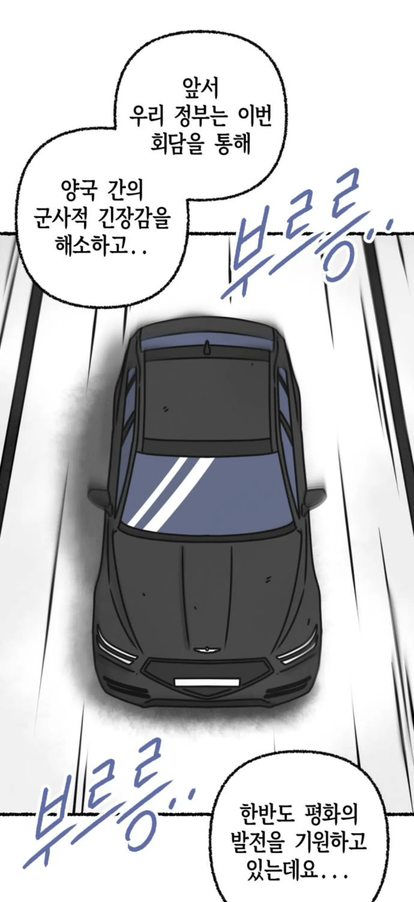
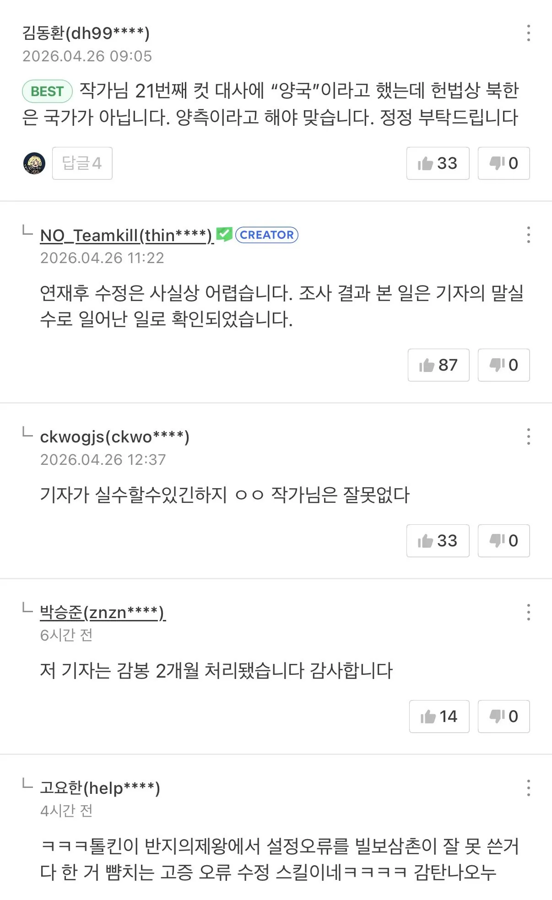

*네이버웹툰 화스트페이스 무료공개분

ㅋㅋㅋㅋㅋㅋㅋㅋㅋㅋㅋ
기자가 말실수 한 것으로 마무리

*네이버웹툰 화스트페이스 무료공개분

ㅋㅋㅋㅋㅋㅋㅋㅋㅋㅋㅋ
기자가 말실수 한 것으로 마무리
나중에 저 기자가 빌런으로 나오는 복선인듯
나이트런의 설정 오류 수습)
메이 자일이 자일 가문의 장녀로 나왔는데, 이후 메이 자일의 친언니 리아 자일이 등장함.
독자 "메이가 장녀라면서요."
작가 "아이쿠, 실수했네."
작가 블로그에선 실수라고 밝혔지만, 작중에선 리아 자일은 가문에서 없는 자식 취급해 여동생인 메이가 장녀 대접을 받고 있다고 땜빵해서 수습함.
ㅇㅎ 그런 거구나
저런 괴물 병기인데
이 놈들은 뭔 차별을 두나 싶었는데
연재 후 수정이 어렵다는건 거짓이다
내가보는 과학고 사변은 컷부터 대사까지 공지도없이 주단위로 계속 고치고 지랄났었다. ㅅㄱ
케바케라는게 있으니깐 뭐
1부 끝나서 다봣는데 잼더라
ㅋㅋㅋㅋ